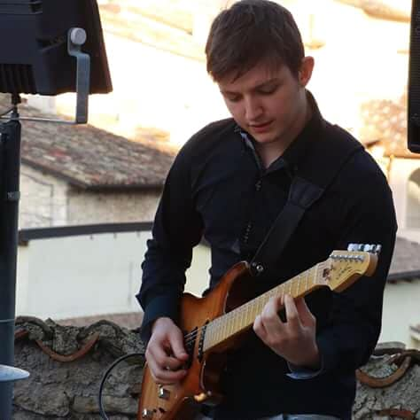

.
Biografia
 Nasco il 18/04/1997 ad Avezzano (Aq), inizio a muovere i primi passi nel mondo della musica fin da piccolo con docenti qualificati, dapprima con il M° Massimiliano De Foglio, successivamente frequento il liceo musicale Aquilano sotto la guida del M° Guido Ottombrino e, contemporaneamente, mi iscrivo al triennio di Chitarra Jazz, al Conservatorio "A.Casella" di L'Aquila, risultando primo in graduatoria a soli 17 anni. Lì ho modo di studiare e perfezionarmi a livello artistico con jazzisti internazionali e didatti eccellenti come: M° Paolo Di Sabatino (musica d'insieme), M° Andrea Beneventano (piano complementare ed armonia), M° Luca Bragalini (Storia ed estetica della musica jazz), M° Fabio Zeppetella (chitarra), M° Antonio Jasevoli (chitarra), M° Rocco Zifarelli (chitarra), M° Fabrizio Sferra (Laboratorio di improvvisazione), M° Massimiliano Caporale (Composizione e Arrangiamento Jazz per large ensemble) e altri… Collaboro con la Big Band del conservatorio in manifestazioni importanti come "Il Jazz Italiano per le terre del Sisma", con l'Orchestra Sinfonica Abruzzese per il progetto "Three Kings" un tributo ai maggiori successi del duca di Ellington in concerto grosso per Big Band e Orchestra, con ospiti importanti quali M°Mike Applebaum (Tromba solista) e M° Bepi D'Amato (Clarinetto solista). Ho modo di perfezionarmi in Pop-Orchestra con il M° Corrado Lambona accompagnando l'attore Maurizio Mattioli, la vocal coach Grazia di Michele, il ballerino Russell Russell e tanti altri... - Diploma di maturità musicale in chitarra classica nel luglio 2016; - Diploma Accademico di I livello in Chitarra Jazz con la tesi "The Unknown Metheny: un'analisi stilistica dal 1974 al 1985" conseguito presso il conservatorio "A.Casella" di L'Aquila il 30/10/2017; - Diploma Accademico di II livello in Chitarra Jazz con la tesi "Collaboration:Laurindo Almeida e il MJQ" conseguito presso il conservatorio "A.Casella" di L'Aquila il 29/07/2020; Sono molto appassionato di programmazione web e, grazie alla piattaforma Start2impact , sto acquisendo le competenze per creare siti come questo e fornire un forte contributo alle aziende, anche se provengo da una formazione diversa. Sono molto sensibile a tutto ciò che riguarda l'ambiente, spero che ciò che sto imparando possa essere d'aiuto per migliorare la vita di tutti i giorni. Importante per me lavorare con altre persone, in ambienti multiculturali, occupando posti in cui la comunicazione è fondamentale e in situazioni in cui è essenziale lavorare in squadra. Tali competenze sono state perfezionate grazie al corso “Comunicazione strategica e vendita” tenutosi presso Ambecò Ambiente e Comunicazione Società Coop A.R.L. di Avezzano (Aq).
Progetti